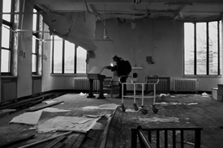

La belleza de un enorme castillo abandonado y decadente le hizo descubrir la exploración urbana. Desde entonces lleva visitados más de 500 lugares viajando por toda Europa.

MATERIAL
ENTREVISTAS
DOCUMENTALES
Te informamos al detalle el material imprescindible para una expedición.
Entrevistamos a exploradores urbanos del resto del mundo.
Trabajo audiovisual referente a los lugares abandonados.
BUSCADORES DEL OLVIDO
Durante estos dos últimos años, por diferentes países de europa se filma a exploradores de lugares abandonados. Asistiendo en sus descubrimientos, valores y normas a seguir frente a los lugares abandonados. Personas que no están en ésta afición por modas pasajeras, sino por descubrir y reflejar en una fotografía o un vídeo un patrimonio olvidado, que tarde o temprano desaparecerá.